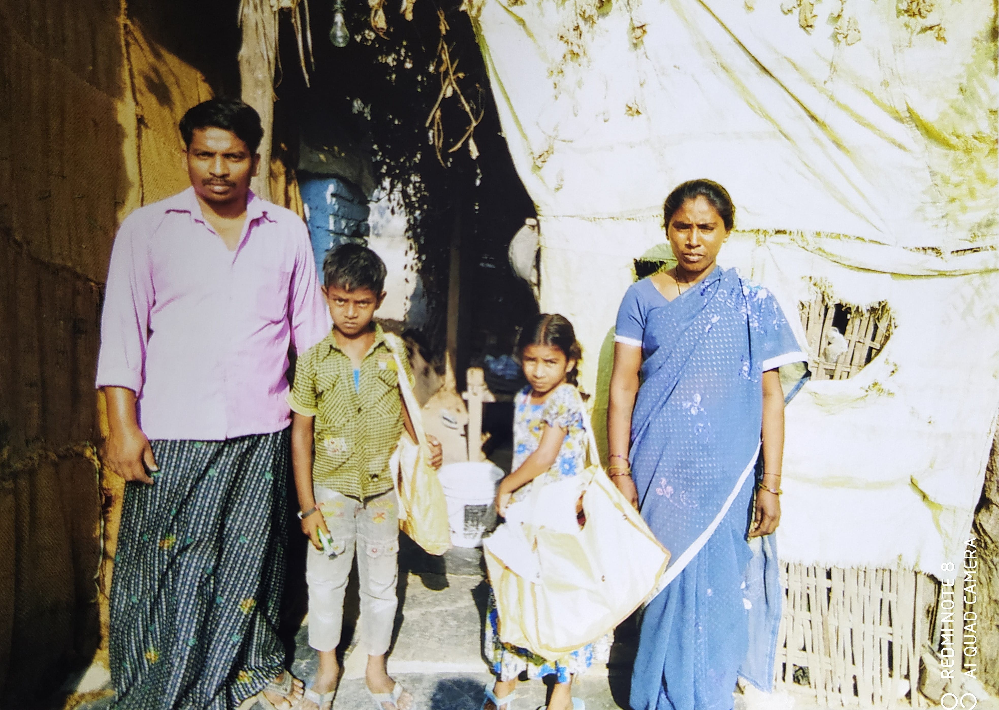

Rooted in Dignity, Advancing Rural Self-Reliance Since 1993.
Select an institutional chapter from the tabular menu below. Only one active section is visible on screen with full archival context, leadership, and operational principles.

The Context in Which We Work: Structural Challenges Faced by Communities
Rural households in the semi-arid Rayalaseema region face acute structural vulnerabilities—recurring dry spells, agricultural uncertainty, lack of formal credit, and historical social marginalization that trap families in cycles of debt and poverty.
Rural families in Kurnool District depend heavily on seasonal dryland agriculture and erratic monsoon rains. Recurring dry spells and groundwater depletion force landless workers and smallholders into distress migration, uncertain seasonal day-labor, food insecurity, and inability to meet basic healthcare or education costs.
Marginalized Dalit and tribal families face severe barriers to formal banking, institutional credit, and formal savings. In emergencies or crop failures, households are forced to rely on predatory local moneylenders who charge extortionate interest rates, perpetuating generational debt bondage.
While women perform the majority of unpaid agricultural and domestic labor, they face severe constraints in accessing productive assets, capital, vocational skills, market linkages, and digital business tools necessary to establish self-reliant micro-enterprises.
Economic distress frequently causes rural children to drop out of primary and secondary school to assist families in daily wage labor. Remote colonies also lack preventive healthcare facilities and potable drinking water infrastructure.